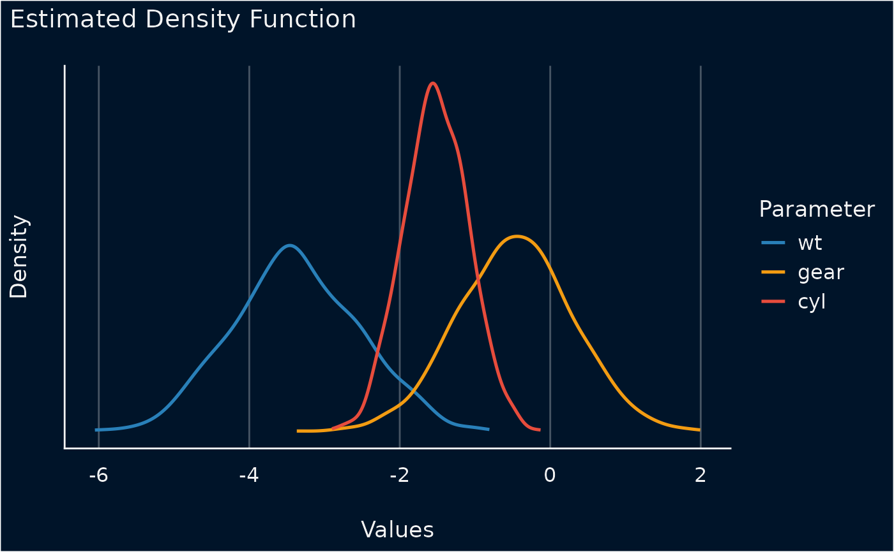

Plot method for simulated model parameters
Source:R/plot.parameters_simulate.R
plot.see_parameters_simulate.RdThe plot() method for the parameters::simulate_parameters()
function.
Usage
# S3 method for class 'see_parameters_simulate'
plot(
x,
data = NULL,
stack = TRUE,
show_intercept = FALSE,
n_columns = NULL,
normalize_height = FALSE,
size_line = 0.9,
posteriors_alpha = 0.7,
centrality = "median",
ci = 0.95,
...
)Arguments
- x
An object.
- data
The original data used to create this object. Can be a statistical model.
- stack
Logical. If
TRUE, densities are plotted as stacked lines. Else, densities are plotted for each parameter among each other.- show_intercept
Logical, if
TRUE, the intercept-parameter is included in the plot. By default, it is hidden because in many cases the intercept-parameter has a posterior distribution on a very different location, so density curves of posterior distributions for other parameters are hardly visible.- n_columns
For models with multiple components (like fixed and random, count and zero-inflated), defines the number of columns for the panel-layout. If
NULL, a single, integrated plot is shown.- normalize_height
Logical. If
TRUE, height of density-areas is "normalized", to avoid overlap. In certain cases when the range of a distribution of simulated draws is narrow for some parameters, this may result in very flat density-areas. In such cases, setnormalize_height = FALSE.- size_line
Numeric value specifying size of line geoms.
- posteriors_alpha
Numeric value specifying alpha for the posterior distributions.
- centrality
Character specifying the point-estimate (centrality index) to compute. Can be
"median","mean"or"MAP".- ci
Numeric value of probability of the CI (between 0 and 1) to be estimated. Default to
0.95.- ...
Arguments passed to or from other methods.
Examples
library(parameters)
m <<- lm(mpg ~ wt + cyl + gear, data = mtcars)
result <- simulate_parameters(m)
result
#> # Fixed Effects
#>
#> Parameter | Coefficient | 95% CI | p
#> ---------------------------------------------------
#> (Intercept) | 42.19 | [33.75, 51.65] | < .001
#> wt | -3.39 | [-4.99, -1.75] | < .001
#> cyl | -1.54 | [-2.40, -0.70] | < .001
#> gear | -0.47 | [-2.11, 1.07] | 0.532
#>
#> Uncertainty intervals (equal-tailed) and p-values (two-tailed) computed
#> using a simulated multivariate normal distribution approximation.
plot(result)
